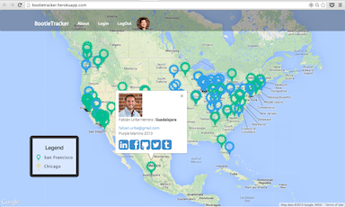
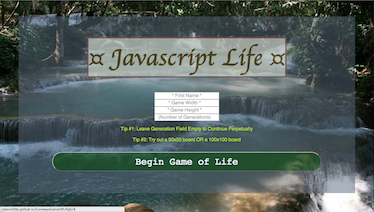
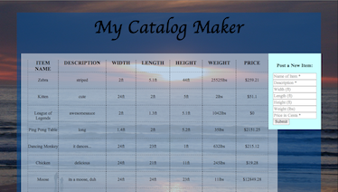

I am a web developer
I have experience developing both front-end and back-end applications
When put amongst a motivated team, I passionately build from dusk until dawn.
My needs: coffee, mentorship, culture, and ping pong
-

BootieTracker is a mapping of DBC alumni; it was created to enable DBC students and alumni to easily see who is within their vicinity and get in contact with each other. We created this application at the Dev Bootcamp Alumni Holiday Hackathon and won the Golden Boot Award - for best product that improves Socrates. This project was completed in one day, by our four person team: using Ruby on Rails, Javascript, jQuery, AJAX, and many many APIs.
-

My implementation of the classic coding challenge, Conway's Game of Life! For those of you unfamiliar with the rules associated, I recommend watching the following video. All about that javascript life. Thus, I embarked to tackle the challenge in javascript.
-

Codewithnyan.com is an embedded, domain-specific language we created that teaches kids fundamental programming concepts like pattern recognition, method chaining, and looping: inspired by the classic Turtle Logo. Kids type commands into the command line and immediately see the results drawn on the canvas.This project was completed in 7 days, by our three person team - using JavaScript, AJAX, HTML5, CSS3, and Imgur API.
-

Tech2Me allows users to post up technical interview questions that can be answered by other members of the community: inspired by StackOverflow. Tech2Me was built using Ruby on Rails, PostgreSQL, AJAX, jQuery, Rspec, and Capybara.
-

MyCatalogMaker is a simple catalog maker that I made for a coding challenge. I spent two days teaching myself Backbone.js, Firebase, and strategizing - followed by one full day coding this app. Backbone.js and Firebase were two technologies I had never previously used. Therefore, I had to teach myself multiple technologies that weekend. Here is the outcome. Feel free to add some fun items that we can "sell" in our catalog :)
-

ImNotYourType is a fun type racer built using Sinatra and Javascript. The boy says cheesy pick up lines and the girl runs away as you type. WPM, time-elapsed, and accuracy are calculated. Made after only two weeks of javascript knowledge. Come Play!